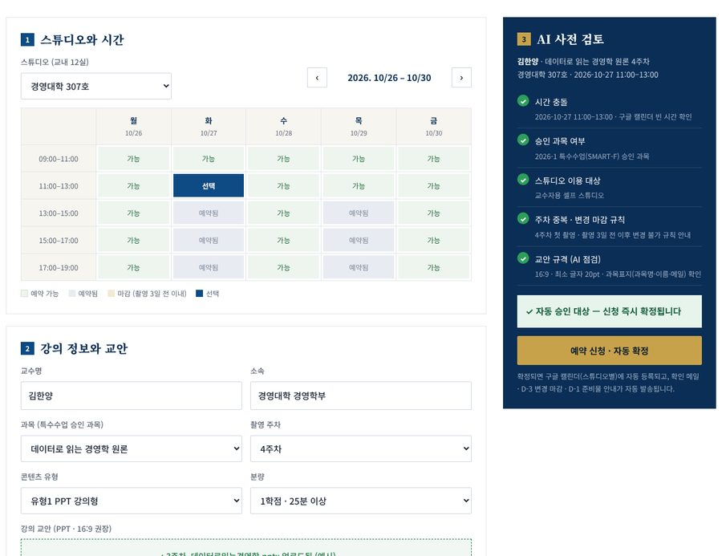
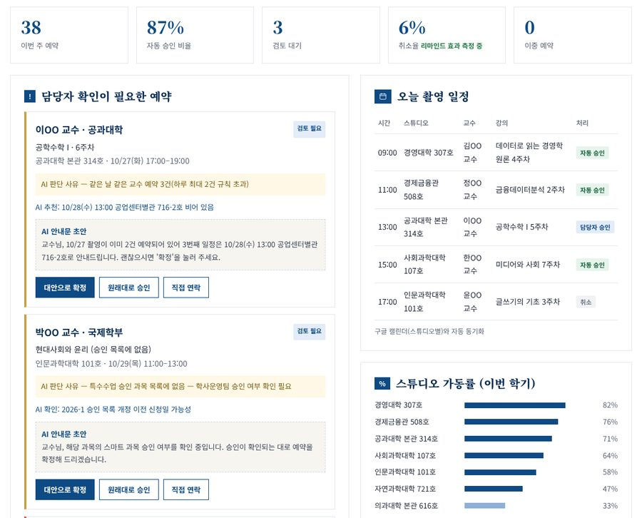

구글 캘린더 직접 입력 → HY FLIP 예약 화면 + AI 사전 검토 + 자동 승인 + 캘린더 자동 연동
| 대상 업무 | 교내 셀프 스튜디오(12실) 촬영 예약 · 승인 · 안내 · 일정 변경 관리 — 매 학기 콘텐츠 개발 기간마다 반복 | ||
|---|---|---|---|
| 이용자 | 플립러닝(Smart-F) 등 스마트 과목 교수자 | 담당 | 에듀테크혁신팀 미디어 일정관리 담당 (조진익 · 조용목) |
| 집중 시기 | 1학기 7월~8월 중순 · 2학기 익년 1월~2월 중순 | 연계 과제 | HY FLIP 홈페이지(M1) · 제작 신청 자동화(M3) · 대시보드(M5) |
※ 근거: 2025-2 스마트 교육 오리엔테이션 자료 「2-1 학기별 콘텐츠 개발 프로세스」「2-4 미디어 일정관리」 · 주황색 = 개선 대상 구간
| 문제점 | 원인 | 영향 |
|---|---|---|
| 예약 취소·변경이 잦음 OT 자료: "예약 취소율 多" | 확정 절차·리마인드가 없고, 입력이 쉬운 만큼 취소도 쉬움 | 스튜디오 공실, 일정 재조정 업무 증가 |
| "촬영 3일 전부터 변경 불가" 규칙을 사람이 관리 | 캘린더에 규칙 검사 기능이 없음 | 규칙 위반·예외 협의가 매번 반복 |
| 승인·검증 단계 없음 | 교수 직접 입력 방식 — 승인 과목·주차·교안 준비 여부 확인 불가 | 미승인 과목 촬영, 교안 미비로 재촬영 |
| 공유 캘린더 편집 권한 | 여러 교수가 같은 캘린더를 편집 | 타인 일정 수정·삭제·이중 예약 위험, 정보 노출 |
| 안내·리마인드 수작업 | 확인·준비물·변경 안내를 개별 메일·전화로 처리 | 담당자 시간 소요, 안내 누락 |
| 촬영 이후 단계와 단절 | 예약과 편집·CMS·LMS 를 따로 관리 | 진행 현황 파악·보고 자료 작성이 수작업 |
| 이용 통계 부재 | 캘린더 기록을 사람이 집계 | 가동률·취소율 근거 없이 운영 |
※ 노란 칸 = AI 가 판단·작성하는 단계. 나머지는 규칙과 연동 자동화로 처리 (3쪽 시스템 구성 참조)
| 처리 | 조건 | 결과 |
|---|---|---|
| 자동 승인 | 특수수업(SMART-F 등) 승인 과목 · 빈 시간 · 촬영 3일 전 이전 신청 · 하루 2건 이내 · 교안 업로드·규격 충족 | 즉시 확정 → 캘린더 등록 → 확인 메일 |
| 담당자 확인 | 승인 목록에 없는 과목 · 같은 주차 재촬영 · 하루 3건 이상 · 교안 미제출 · 4시간 이상 연속 예약 | AI 가 사유 · 대안 시간 · 안내문 초안을 붙여 담당자에게 → 클릭 한 번으로 처리 |
| 신청 불가 | 촬영 3일 이내 신규·변경 · 학생전용 스튜디오 · 이미 예약된 시간 | 즉시 안내 + 가장 가까운 빈 시간 추천 |
| 기능 | AI 의 역할 | 기대 효과 |
|---|---|---|
| 교안 사전 점검 | PPT 화면비 16:9, 글자 크기(18~24pt), 과목표지(과목명·주제·소속·이름·메일) 확인 — OT 자료 「2-5 교안 작성」 기준 | 교안 미비로 인한 재촬영 감소 |
| 대체 시간 추천 | 빈 시간 · 스튜디오 가동률 · 교수 소속 단과대학 위치를 고려해 대안 제시 | 일정 협의 메일·전화 감소 |
| 안내문 초안 작성 | 승인·반려·변경 안내를 상황에 맞게 자동 작성, 담당자는 확인만 | 안내 작성 시간 절감, 표현 통일 |
| FAQ 도우미 | OT 자료를 근거로 변경 규칙·분절 촬영·장비·CMS 확인 방법 등에 답변 | 반복 문의 감소, 야간·주말 응대 |
| 취소 위험 알림 (선택) | 교안 미제출·과거 취소 이력이 있는 예약을 D-3 이전에 미리 확인 요청 | 당일 취소·노쇼 감소 |
※ 지금 쓰는 구글 캘린더 계정을 그대로 사용 → 이전 비용·학습 부담 최소. 교수의 직접 편집 권한만 회수하고 예약은 화면으로 일원화
| 추진 내용 | 10월 3~4주 | 11월 1~2주 | 11월 3~4주 | 12월 1주 | 12월 2~3주 | 2027. 1~2월 |
|---|---|---|---|---|---|---|
| 현행 분석 · 지난 학기 캘린더 기록으로 기준값 산출 · 규칙 확정 | ||||||
| 예약 화면 · 시트 · 캘린더 연동 (M3) | ||||||
| AI 사전 검토 · 자동 안내 · 담당자 화면 | ||||||
| 시범 운영 (스튜디오 2~3실) · 정량 측정 | ||||||
| 성과 공유 (STEP 3) | ||||||
| 2026-2학기 콘텐츠 개발 기간 12실 전면 적용 |
| 지표 | 기준값 (As-Is) | 목표 (잠정) |
|---|---|---|
| 예약 취소·변경률 | 지난 학기 구글 캘린더 기록으로 산출 | 절반 이하로 |
| 이중 예약 · 타인 일정 수정 | 지난 학기 발생 건수 확인 | 0건 |
| 예약 1건 처리 시간 (확인·조율·안내) | 10월 담당자 작업 기록 | 80% 이상 단축 |
| 담당자 수동 처리 비율 | 현재 100% (전 건 수동) | 20% 이하 (자동 승인 80%↑) |

